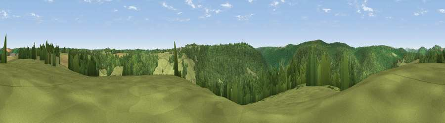

Wyegate Hill
#26501 in England · top 55% of its area beats it · near St BriavelsThe view, rendered

A 360° render of this exact spot computed from the terrain model, tree cover and land cover — summer colours, afternoon light, calibrated against photographs of famous viewpoints. Real trees, hedges and buildings will differ in detail.
The panorama
Grey silhouette: terrain skyline in each direction (720 bearings, Earth curvature and refraction included). Dashed green: skyline with trees (+15 m) and buildings (+8 m) as obstacles. Blue strip: how far the ground is visible on each bearing.
Where the view opens
Wedge length = distance to the farthest visible ground on that bearing (vegetation-aware). Rings at 10, 25 and 50 km.
What fills the view
67% woodland · 26% grassland · 6% cropland
Angular shares of the visible panorama (visual magnitude), not map area. Landscape diversity 0.36 (0–1 Shannon).
Key numbers
More beautiful places nearby
The staircase of upgrades: each row has a higher view potential than everything closer. Driving times are estimates from straight-line distance, calibrated against real road routing — check an actual route before setting out.
| Place | Direction | Drive | Score |
|---|---|---|---|
| Viewpoint near St Briavels | S · 2 km | ~6 min | 49.9 |
| Viewpoint near St Briavels | S · 3 km | ~7 min | 55.4 |
| Hart Hill | SSW · 3 km | ~7 min | 61.6 |
| Viewpoint near Hewelsfield | SE · 5 km | ~11 min | 69.4 |
| Viewpoint near Hewelsfield | SSE · 5 km | ~12 min | 70.7 |
| Buck Stone | N · 6 km | ~13 min | 71.0 |
| Viewpoint near Welsh Newton | NNW · 11 km | ~21 min | 72.0 |
| Viewpoint near Goodrich | NNE · 13 km | ~23 min | 74.0 |
51.75229, -2.65378 · source: osm peak · position refined by local search. Computed location — check access rights before visiting.